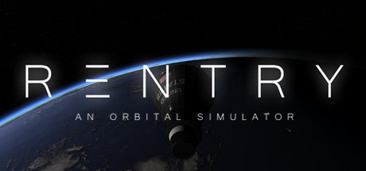
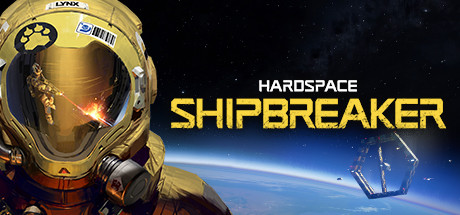
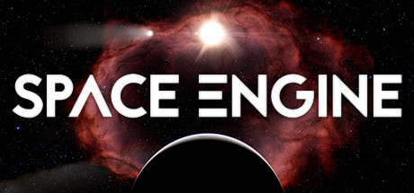

Introduction
This part of our virtual gallery will show you some of the space/sci-fi games you can find in our Discord bot. You can find all of these games and many more like them on Steam. They are not in any particular order, if anything check out each and see which fits your style more!
1. Terra Invicta - Genre: Strategy, Space, Simulation
 Terra Invicta is a game where an alien invasion has fractured humanity into several ideological factions,
you are chosen to lead one of these factions to take control of Earth's many nations and expand yourself across the solar system.
This game portrays space fairly accurately, having specific transfer windows to save on fuel and time, you also set up many mining bases across the Solar System's planets,
moons and asteroids to build up resources to help the aliens, or to build warships to fight back against the aliens and their allies.
If you'd like to check out this game and possibly play it, click here!
Terra Invicta is a game where an alien invasion has fractured humanity into several ideological factions,
you are chosen to lead one of these factions to take control of Earth's many nations and expand yourself across the solar system.
This game portrays space fairly accurately, having specific transfer windows to save on fuel and time, you also set up many mining bases across the Solar System's planets,
moons and asteroids to build up resources to help the aliens, or to build warships to fight back against the aliens and their allies.
If you'd like to check out this game and possibly play it, click here!
2. Reentry - An Orbital Simulator - Genre: Space, Flight, Simulation
 Reentry is a realistic space flight simulator based on NASA's space programs, become an astronaut and take part in programs from Project Mercury to the moon landing in Project Apollo. In this game you play as the astronaut controlling the spacecraft, learning how to fly and operate them like a real astronaut would. If you'd like to check out this game and possibly play it, click here!
3. Hardspace: Shipbreaker - Genre: Space, Sci-fi, Physics
 Hardspace: Shipbreaker takes place in the dystopian future, most of the Solar System has been heavily industrialized, and you partake in that by working for the LYNX corporation, which salvages ships and uses the parts for profit. You are working to pay off a billion credit debt owed to LYNX. This game accurately depicts zero g environments, along with a possible future for humanity if corporations begin having much more power in space and our society. If you'd like to check out this game and possibly play it, click here!
4. Space Engine - Genre: Space, Sandbox, Casual
 Space Engine is 1:1 science-based universe simulator, users can explore any part of our charted universe, along with procedurally generated parts that haven't been accurately mapped by scientists yet. This game is meant for players who want to explore our universe, letting them spend hours exploring our solar system and galaxy, along with other star systems and galaxies hundreds if not thousands of light years away! If you'd like to check out this game and possibly play it, click here!
5. Kerbal Space Program - Genre: Space, Simulation, Physics
 Although KSP looks like a very cartoony space game,
it actually bases most if not all of its mechanics on real life physics.
Players are given the tools to create their very own spaceships, using those to lift off the planet
and explore and solar system similar to ours in real life. Given that the sequel will
be coming out early next year, it's a perfect time to get into it and learn as much as possible!
If you'd like to check out this game and possibly play it, click here!
Although KSP looks like a very cartoony space game,
it actually bases most if not all of its mechanics on real life physics.
Players are given the tools to create their very own spaceships, using those to lift off the planet
and explore and solar system similar to ours in real life. Given that the sequel will
be coming out early next year, it's a perfect time to get into it and learn as much as possible!
If you'd like to check out this game and possibly play it, click here!